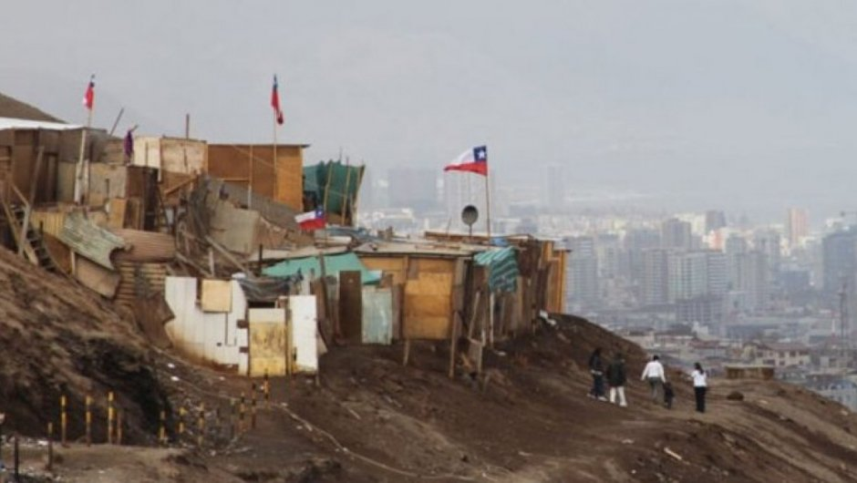
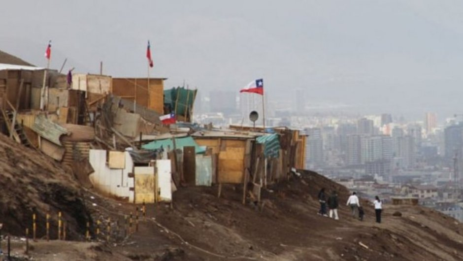

TOMAS DE TERRENO: PEÑALOLEN
Hoy día contamos 486 tomas a nivel nacional, que se suman a los 546 campamentos que están a nivel nacional de acuerdo con el catastro hecho en 2019. Lo que totaliza 1.096 campamentos y tomas en Chile.
Html: lenguaje de marcado de hipertexto.Un hipertexto significa un texto no secuencial o un sistema de texto.
El 12 de julio de 2020 el país aún vivía la etapa crítica de la pandemia. Más de 1,8 millones de personas habían perdido su trabajo producto de las cuarentenas, y la pobreza se expandía tan rápido como el coronavirus. Horas antes, la Cámara de Diputados aprobaba el primer retiro del 10% de los fondos de las AFP, como medida de emergencia para paliar la crisis.
Quizás fue esto último, la esperanza de tener dinero en efectivo de inmediato, lo que motivó a decenas de familias a tomarse un terreno en Cerrillos, donde hasta 1995 funcionó el vertedero Lo Errázuriz, y comenzar la construcción de sus casas. No con mediaguas, sino que con ladrillos y cemento.
La noticia de la toma corrió rápido entre las familias más necesitadas, en especial la población migrante. El día 20 de ese mes, un grupo de 500 haitianos llegó al lugar, delimitaron sus espacios y comenzaron a instalar sus casas. Y la ocupación no ha parado de crecer hasta hoy.

En este párrafo se anidará una etiqueta dentro de un párrafo
TOMAS DE TERRENO: PEÑALOLEN
Hoy día contamos 486 tomas a nivel nacional, que se suman a los 546 campamentos que están a nivel nacional de acuerdo con el catastro hecho en 2019. Lo que totaliza 1.096 campamentos y tomas en Chile.
El 12 de julio de 2020 el país aún vivía la etapa crítica de la pandemia. Más de 1,8 millones de personas habían perdido su trabajo producto de las cuarentenas, y la pobreza se expandía tan rápido como el coronavirus. Horas antes, la Cámara de Diputados aprobaba el primer retiro del 10% de los fondos de las AFP, como medida de emergencia para paliar la crisis. Quizás fue esto último, la esperanza de tener dinero en efectivo de inmediato, lo que motivó a decenas de familias a tomarse un terreno en Cerrillos, donde hasta 1995 funcionó el vertedero Lo Errázuriz, y comenzar la construcción de sus casas. No con mediaguas, sino que con ladrillos y cemento. La noticia de la toma corrió rápido entre las familias más necesitadas, en especial la población migrante. El día 20 de ese mes, un grupo de 500 haitianos llegó al lugar, delimitaron sus espacios y comenzaron a instalar sus casas. Y la ocupación no ha parado de crecer hasta hoy.

"Aquí nadie nos molesta, esto está así desde que tengo uso de razón. Este es el fundo Santa Rosa Pajonal. fundo Santa Rosa Pajonal [...] y de los 17 herederos, nosotros encontramos a una doctora en Santiago, pero ella no quiere saber nada de esto, porque dice que para poder vender tienen que estar todos juntos (herederos). y creo que andan para España, para Suecia, así que tendría que ser el gobierno no más"
Valparaiso
La accesibilidad de las ciudades modernas y el riesgo de desalojo impiden una formación urbanística más holgada.

Las tomas en Valparaíso se establecen en las quebradas, espacios de vegetación y suelos en pendiente qeu no fueron considerados en los planes urbanos.
En menos de dos años, el campamento Nuevo Amanecer de Cerrillos se convirtió en el más grande de la Región Metropolitana, y el segundo más grande del país: ahí viven entre 9 mil y 10 mil personas, de las cuales el 85% son migrantes, y tiene una extensión de 20 hectáreas. Ya es más grande que la histórica toma de Peñalolén.
 


⇤Galería de imágenes⇥
¿Por qué creció tan rápido? Porque estas familias no pudieron seguir pagando sus arriendos. No se trata de migrantes que hayan llegado en los últimos meses a Chile, sino que en su mayoría son familias prácticamente chilenas, pues llevan varios años en el país, pero no los suficientes como para adquirir una vivienda, y que vieron en el retiro de sus ahorros de las AFP una oportunidad para tener su casa. Una de las dirigentas -todas las líderes de la toma son mujeres- es Pamela Santisteban, peruana cuya madre postuló por años al subsidio de vivienda, sin lograrlo, y a quien la pandemia la obligó a moverse a la toma. “La mayoría de los que llegan acá viene con la idea de quedarse definitivamente, porque no han logrado encontrar otra oportunidad de tener un techo propio y vivir dignamente, sin excesos en el cobro de arriendos. Vine a la toma por lo mismo”, relata, mientras recorre junto a La Tercera las calles del campamento. Otro peruano, Carlos Morales, llegó a la toma luego de vivir 23 años arrendando. Vivía en una pieza en Estación Central, pero pagar se le hizo insostenible. “Los gastos eran excesivos y los arrendatarios no perdonaron ni un mes de atraso”, dice.
=======
Tomas de terreno en Valparaiso
El agua en muchos lugares del mundo está escaseando, pero hay lugares donde la aprovechan mejor haciendo estanques con plantas creando microsistemas de oasis, tambien hay lugares con mucha agua sobre todo harta agÜita
quebrada cabriteria